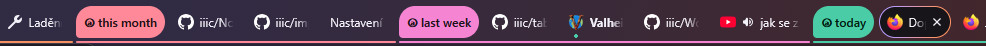

Extension for browsers to sort tabs into groups by time (day)
tabGroups

tabs sorted in groups
Thank you for using this extension. Take a look at the extension settings, where you can adjust more options than just the language.
Docs
There are 2 ways to automatically sort tabs into groups:
By tab creation — the tab stays in a group based on when it was opened. So, for example, yesterday's tab stays in yesterday's group even if I use it today.
By last use of the tab — the tab stays in a group based on when it was last used. So, for example, yesterday's tab automatically becomes today's tab if I use it today.
Individual settings
For each group you can choose a color or a specific group name. You can also set whether the group should be collapsed by default. That can be handy for tabs older than a year… for example.
Prefix
Exactly what it sounds like: a prefix for tab group names, for example a unicode icon or anything else. If you have many tab groups, it prevents accidentally confusing them with others.
Advanced settings
An advanced feature is the ability to sort tabs into groups according to bookmarks, or according to domains in bookmarks.
If you want to use sorting tabs by bookmarks, you will be asked to grant this extension an additional permission to access bookmarks. By default, this extension neither requires nor needs access to bookmarks.
A word from the developer
This plugin is carved out of a larger extension built for programmers, analysts and website administrators. That one is quite complicated and many users wouldn't use it, but you often told me that this part, the tab sorting, is great and would be useful to more people. So here it is, I hope you enjoy it.
Development should be made easier by TypeScript annotations (in otherwise plain JavaScript) and a few simple unit tests included in the repository.
The project is also published as an npm package and you can get it with the console command npm i tabgroups-extension, details in the online npm registry: https://www.npmjs.com/package/tabgroups-extension
If you speak a language this plugin doesn't support yet and would like to make a translation, I'll gladly add it to a new version of this extension.